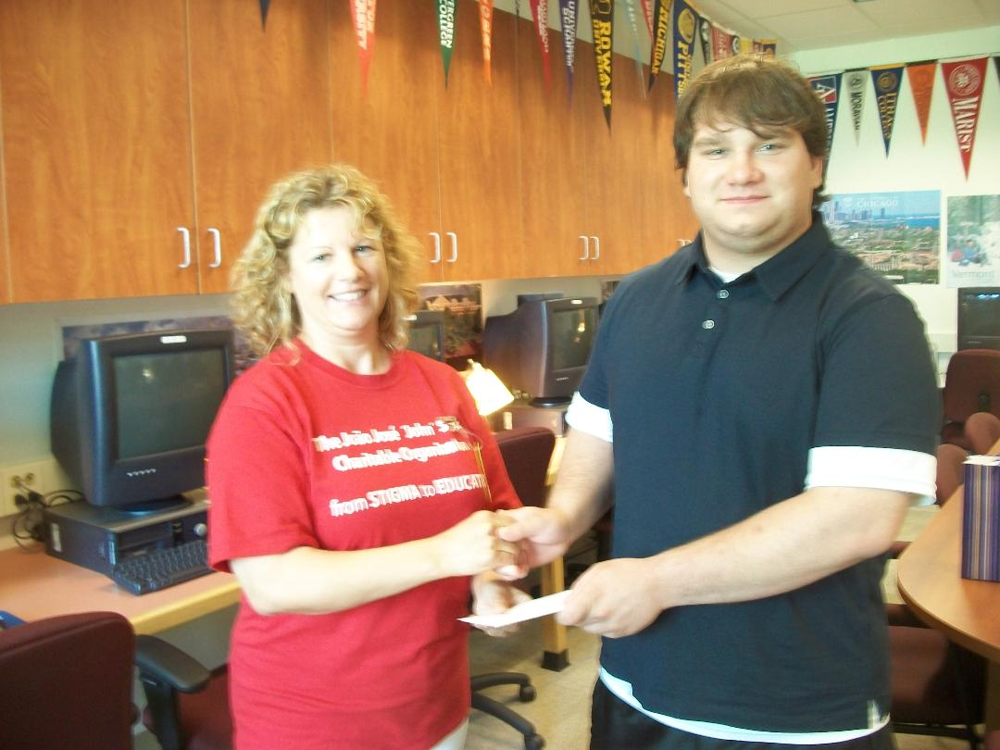

João José John Santos Charitable Organization
Bringing Depression and Suicide Prevention into the Spotlight!
~ Congratulations to our 2011 Scholarship Winners ~

We are proud to present the first João José 'John' Santos Charitable Organization Scholarship Awards to the
following three hardworking high school graduates. We received many applicants, and it was difficult to pick
the best three qualified because they all deserve a little extra bonus for all of their hardwork!! To qualify,
students need to write an essay explaining why they are continuing their education in the mental health field;
they need to have outstanding academic achievements and accomplishments in community service.
Giulia Guazzo
Hunterdon Central Regional High School
Flemington, NJ
Izabela Tavares
East Side High School
Newark, NJ
Steven Perlack
Bridgewater/Raritan High School
Bridgewater, NJ
Click below for previous scholarship recipients...
COPYRIGHT (c) 2019.
ALL RIGHTS RESERVED.